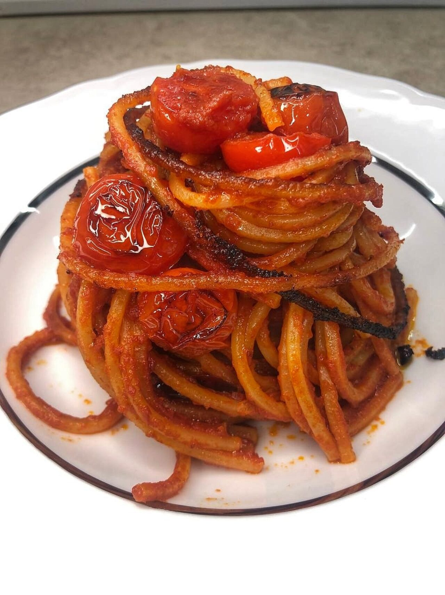

Our Menu
Discover our delicious selection of pastas
Pasta ajo, olio, peperoncino e acciughe
Aglio, olio d'oliva, peperoncino, acciughe, prezzemolo

Carbonara
Guanciale, tuorlo d'uovo, pecorino, pepe nero
Pasta all'amatriciana
Guanciale, pomodoro, pecorino, pepe nero
Pasta alla gricia
Guanciale, pecorino, pepe nero

Pasta all'assassina
Pomodoro, peperoncino, aglio, olio d'oliva
Pasta allo scoglio
Frutti di mare, aglio, olio d'oliva, prezzemolo, pomodoro
Pasta alla puttanesca
Pomodoro, olive nere, capperi, acciughe, peperoncino, aglio
Mezze cacio e pepe
Pecorino, pepe nero, pasta